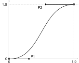

CSS in Motion
Animations For Fun and Profit
Martine Dowden
CW about motion in the slide deck
Martine Dowden
(She/Her)
Book
23 Tiny CSS Projects
Course
22 CSS Animations & Transitions
GDE
21 Angular
Book
20 Architecting CSS
Book
19 Approachable Accessibility
Microsoft MVP
19 Developer Technologies
GDE
18 Web Technologies
Product
17 FlexePark
Company
15 Andromeda Galactic Solutions
Book
15 Programming Languages ABC++
Ivy Tech
14 Vis Comm Technical Certificate
Marian University
09 BS Psychology
Reason for talk:
Why the talk? Improving the user interface with animations -- Makes UI feel more naturalSo Why am I giving this talk at a JavaScript conference? There are limitations to CSS animations that require JS
Which to choose?
Transitions
.panel {
/* closed styles */
transition: all 250ms ease-in-out;
}
.panel.expanded {
/* opened styles */
}
Animations
@keyframes loading {}
svg rect {
animation: loading 3s ease-in-out infinite;
}
play_arrow
Transitions
First let's take a closer look at transitions
Transitions
swap_horiz
Between pre-existing states
looks_one
Runs once
touch_app
Requires a trigger
Between states :
gaining focus
on hover
adding or removing a class via JavaScript
change in content length, if we are getting real time data for example
Runs once :
Once it is triggered, it will run as many times as the transition defines and then be done until the state changes again
Requires a state change to trigger
Why use a Transition
quick_phrases
Response
explore
Orienting
eco
Natural
Hover & Focus
Link Styles
a:link, a:visited {
color: #4484c5;
border-bottom: dotted 2px #4484c5;
display: inline-block;
}
a:hover, a:focus {
border-color: #f78c00;
color: #116775;
transform: scale(1.5);
transition: all 1000ms cubic-bezier(.74,-0.95,.23,1.7);
}
Here we have a link, that we will hover over. The hover effect has been heavily dramatized so that it would show up on better in the presentation but it will allow us to illustrate the concepts that we have just talked about.
Without the transition , the change is immediately applied and removed
Once the transition is applied , we can watch the change happen and the effect is a lot less jarring
--> We often think of transitions as simple, but you'll notice that first we shrink and then expand. How do we achieve more complex transition effects?
We can manipulate the acceleration of change between our 2 states via the animation-timing-function property using a bezier curve which even if you have never written a custom one, you have been using already as part of your animations and transitions.
Easing Functions
linear
cubic-bezier
ease
cubic-bezier
ease-in
cubic-bezier
ease-in-out

cubic-bezier
ease-out
cubic-bezier
The keyword values we use in our animations and transitions are bezier curves under the covers. So if you've use ease-in, ease-in-out, or any of the other 3 that CSS provides for us, you have used a bezier curve.
--> So let's break down how the bezier curve works so we can do effects like we saw in the previous slide where we didn't scale directly from a scale(1) to scale(1.5) but got smaller before we got bigger and reached our final size?
Cubic Bezier
cubic-bezier
The Curve
Defined by 4 points, P0 , P1 , P2 , and P3
P0 and P3 define the beginning and endP1 and P2 represent the control points to give the curve its shapePoints are defined by (x, y) coordinates
The bezier curve is defined by 4 points
P0 and P3 define the start and end of the curve
The other 2, P1 and P2 define the handles that will control the shape of the curve
These points are defined using (x, y) coordinates on a cartesian plane
--> in CSS you'll notice that we define only 4 points, since each point is defined using an x and a y coordinate should'nt be passing in 8 values?
Cubic Bezier
cubic-bezier
CSS function
Pre-defines P0 and P3 at (0, 0) and (1, 1)
You define P1 and P2
The x values need to remain between 0 and 1 (inclusive).
cubic-bezier(x1, y1, x2, y2)
The reason we only define 4 values for CSS is that CSS takes care of P0 and P3 (The beginning and end points of the curve) for use.
The only 2 values we need to define are the those of the handles (P1 and P2 ).
Our x coordinates must always stay between 0 and 1 but we have more wiggle room with our ys
If we keep the y coordinate of our handles between 0 and 1 our changes will be applied within their start and end parameters. So if we are growing an object, it will go from it's original size to it's larger size continuously growing the entire transition.
If any of our y coordinates are less than 0 or greater than 1 we can make some interesting effects such as our link shrinking before it got bigger
--> Let's return to our hover example
Cubic Bezier
With
My Link
cubic-bezier(0.74,-0.95,0.23,1.7);
Notice that our curve extends above the x=1 axis and below the 0 x axis, this is why we shrink smaller than our original size and then become bigger than our final size, before finally settling in to our target scale.
--> There are some limitations however one of which when adding a transition between element heights, let's take a look
Limitations
height: auto
.header {
...
border-radius: 8px;
transition: all 250ms ease-in-out;
}
.body {
...
height: 0;
overflow: hidden;
transform-origin: top center;
transition: height 250ms ease-in-out;
}
.expanded .header {
border-radius: 8px 8px 0 0;
}
.expanded .body {
border: solid 1px #4484c5;
border-top: none;
height: auto;
padding: 1rem;
}
One of the places we often animate the change between the heights of an element is when we are dealing with collapsible panels, either individual ones or multiples as part of an accordion.
Often once open we don't necessarily know how much height the content needs so we are tempted to try to transition from a height of 0 to a height of auto
--> (scrolls code)
Notice however that this will not work. the panel instantly opens and closes and the change is not animated.
--> (scrolls code)
Limitations
height: auto
.header {
...
border-radius: 8px;
transition: all 250ms ease-in-out;
}
.body {
...
height: 0;
overflow: hidden;
transform-origin: top center;
transition: height 250ms ease-in-out;
}
.expanded .header {
border-radius: 8px 8px 0 0;
}
.expanded .body {
border: solid 1px #4484c5;
border-top: none;
height: 300px;
padding: 1rem;
}
If I change the height to a fixed value such as 300px, we notice that our animation now works for both opening and closing.
--> But like I said earlier, we often don't know ahead of time how tall we actually need to be, so what can we do?
Some Solutions
expand
max-height
zoom_out_map
transform: scale()
We have a couple of options
max-height : rather than changing the height, we change the max-height. We still need to use value (not auto) but we can overshoot the height and since we are operating on the max-height, the position element will expand and retract as directed. It's not very precise, will make the animation appear slower on longer blocks of content than on short ones because the there is more height to expand but it will get the job done.transform: scale()JavaScript We can use JS to find the height of and then change the height via javaScript on open and close which will prevent the need to guess.
--> Before we move on to some other options and solutions let's pause for a second and talk about accessibility as it relates to animations
Accessibility
Showing and Hiding Content
Use semantic tags
Test for keyboard accessibility
Add ARIA for screen reader accessibility
You will need JavaScript to make your show / hides accessible
When creating animations, specifically showing and hiding content, there are a couple things we will need to do and test for.
As always, we should use semantic tags in our HTML
We need to make sure that users can expand and collapse the content using a keyboard only
Need to add ARIA to add context as to the state of our content (expanded / collapsed) so that assistive technologies such as screen readers can appropriately inform the user about the state of the content
NOTE: You will need to use JavaScript to toggle the ARIA properties when the panel is expanded or collapsed.
Accessibility and Motion
Success Criterion 2.3.3 Animation from Interactions:
Motion animation triggered by interaction can be disabled, unless the animation is essential to the functionality or the information being conveyed.
@media (prefers-reduced-motion: reduce) {
/** Disable animations and transitions here **/
}
/** OR **/
@media (prefers-reduced-motion: no-preference) {
/** Animations and transitions go here **/
}
Furthermore, we need to consider motion. On their devices, users can set that they prefer reduced motion. We can access this property via a media query and can therefore only conditionally include the animations for those that do not have this setting enabled.
What about using display: none?
Animations
Let's go back to our example, we know that going from a height of 0 to a height of auto and vice versa does not work, so what about display none?
At the moment, you can't transition from something to nothing or from nothing to something. So we can't transition to and from display none.
There has been talk about changing this behavior in the future to allow us to, but as of right now if we want to animate to and from display none, we need to use an animation.
--> So how do animations differ from transitions?
Animations
alternate_email
Uses keyframes
all_inclusive
Runs any number of times
auto_mode
Does not require a trigger
Animations
switch_access_shortcut
Complex Animations
all_inclusive
Repeated animations
visibility_off
display: none
Keyframe Structures
@keyframes animation-name {
from { }
to { }
}
.class {
animation: duration | easing-function | delay | iteration-count | direction | fill-mode | play-state | name
}
Declarations in a keyframe qualified with !important are ignored.
The first part of the keyframe is it's name, which we use in our class to refer to which keyframes should be used for the animation
Keyframes define each step and when during the animation, our element changes are. We set pre-defined point, such as going from red to blue, and the browser will fill in the shift in between so if we are going from red to blue, halfway through the animation, the browser will have automatically determined that our element should be purple.
This does bring up the point that things that are binary (such as overflow, display...) cannot be animated. THere is nothing to move towards since these are binary values. It either is or it is not. A height, or opacity however is scalar, which is why we can can animate those.
In our example, we have a from which is the equivalent of 0%, and a to which is 100%. Either notation is acceptable. If we wanted to add more steps in between we could. we would define at what percent of the animation completion the change styles should be and add a rule inside of the keyframe.
It is important to note that !important does not work inside of keyframes. If a declaration contains and important, the declaration will be ignored
--> Let's change our animation in our expandable panel to use a keyframe
Revisiting The Expansion Panel
@keyframes expansion {
from { transform: scaleY(0); }
to { transform: scaleY(1); }
}
.panel .body {
overflow: hidden;
transform-origin: top;
display: none;
}
.panel.expanded .body {
display: flex;
animation: expansion 250ms ease-in-out;
}
Our keyframe works by animating the change in scale of the panel content.
We notice that our animation works well when opening the panel but does not animate the close
--> Let's dig into the CSS to understand why
Closing the Panel
Our 2 states
@keyframes expansion {
from { transform: scaleY(0); }
to { transform: scaleY(1); }
}
.panel .body {
display: none;
transform-origin: top;
}
.panel.expanded .body {
display: block;
}
.panel.open .body {
display: block;
animation: expansion 250ms ease-in-out;
}
.panel.close .body {
animation: expansion 250ms ease-in-out reverse;
}
When we open we have javascript that adds an expanded class to the panel which changes the display property of the content from none to block.
On close, the class is removed. The and the object is immediately removed from the dom, preventing any kind of animation from being performed
Closing the Panel
HTML
function toggleExpandAnimated(elem) {
In our HTML we have an on click on the panel header to open and close the panel
--> and we also need to add a listener for when the panel's animation ends
--> Our CSS therefore looks as follows
Closing the Panel
Triggering the animation
@keyframes expansion {
from { transform: scaleY(0); }
to { transform: scaleY(1); }
}
.panel .body {
display: none;
transform-origin: top;
}
.panel.expanded .body {
display: block;
}
.panel.open .body {
display: block;
animation: expansion 250ms ease-in-out;
}
.panel.close .body {
animation: expansion 250ms ease-in-out reverse;
}
Once the animation has ended and the onanimationend event has triggered, then only can we add the display none (remove the expanded class) and remove the element from the DOM
so we are going to need an intermediary class that handles the closing of the element, and plays the animation in reverse.
--> let's take a peak at the JavaScript
Closing the Panel
JavaScript
function animatePanel(elem) {
const _panel = document.getElementById(elem);
const isOpen = _panel.classList.contains('expanded')
if (isOpen) {
_panel.classList.add('close')
} else {
_panel.classList.add('open')
}
}
function togglePanel(panel) {
const _panel = document.getElementById(elem);
const isOpen = _panel.classList.contains('open')
if (isOpen) {
_panel.classList.remove('open')
_panel.classList.add('expanded')
} else {
_panel.classList.remove('expanded')
_panel.classList.remove('close')
}
}
We find our panel, in this case by ID
We determine if it's expanded by checking if it has the .expanded class
If this expanded, we add the intermediary close class to it
If it's close, we add the open class
-->
On animation edn we do very similar logic,
We find our panel and determine if it's opening
If yes, we clean up after ourself, remove the open class, and add expanded
If it was closing, we remove both the expanded and close classes which revert our element to having a display of none.
Output
we now have a working open and close animation.
The key is to listen to animation end events so that our animation has time to complete before we hide the element for good.
--> Our accessibility concerns for animation are very similar to those of transitions
Accessibility
Showing and Hiding Content
Same as with transitions
Use semantic tags
Test for keyboard accessibility
Add ARIA for screen reader accessibility
When creating animations, specifically showing and hiding content, there are a couple things we will need to do and test for.
As always, we should use semantic tags in our HTML
We need to make sure that users can expand and collapse the content using a keyboard only
Need to add ARIA to add context as to the state of our content (expanded / collapsed) so that assistive technologies such as screen readers can appropriately inform the user about the state of the content
NOTE: The code samples in this talk do not have all of the ARIA included in them so that we could really focus on the transition aspect!!
--> But what about all those fancy loaders we often see, those are usually made from SVGs. How do we apply CSS animations to SVGs?
Animations and SVGs
play_arrow
We are going to use walk though creating the following loader
--> Let's peak at what our SVG looks like under the covers.
The SVG
Inline inside of our HTML, our SVG looks as follows.
It is composed of 5 rectangles. All an SVG is under the covers is XML, so we can place them inside of our HTML, and access the elements with CSS like any other elements, which a couple of caveats. Some of our properties will not be the same for svg elements as for HTML elements, notably for this example, background.
--> Because we have the SVG inside of our HTML (and not being imported by an image tag) we can add the CSS that drives the loader with all of our other CSS in our CSS file.
The CSS
.loader svg {
display: block;
margin: 1rem auto;
}
rect:nth-of-type(1) { fill: #122849; }
rect:nth-of-type(2) { fill: #0A3F7F; }
rect:nth-of-type(3) { fill: #4484c5; }
rect:nth-of-type(4) { fill: #0A3F7F; }
rect:nth-of-type(5) { fill: #122849; }
Currently our CSS simply positions the SVG on the page and colors the individual rectangles that form our SVG
Notice that we use the property fill. This is one of the ways in which styling SVGs differ from HTML elements. When changing the background color rather than than background we use fill.
The structure though is the same, we have a selector, and then in the rule, we have declarations with properties and values
--> Let's start animating the rectangles
Animations and SVGs
play_arrow
@keyframes loader {
from { transform: scaleY(1); }
50% { transform: scaleY(0); }
to { transform: scaleY(1); }
}
.loader rect {
transform-origin: center;
animation: loader 3s ease-in-out infinite;
}
We add a keyframe with 3 different rules. The first and last (the from and 2 define where we want to be at the start and end of the animation.
The middle one (50%) defines that halfway through the animation we want the rectangle completely collapsed
Then we set the animation on the rectangles. It will take 3 seconds to run the animation and we will make it run an infinite number of times.
--> However all of our rectangles expand and retract in unison. Let's fix that.
Animations and SVGs
@keyframes loader {
from { transform: scaleY(1); }
50% { transform: scaleY(0); }
to { transform: scaleY(1); }
}
.loader rect {
transform-origin: center;
animation: loader 3s ease-in-out infinite;
}
.loader rect:nth-of-type(1) { fill: #122849; animation-delay: 0; }
.loader rect:nth-of-type(2) { fill: #0A3F7F; animation-delay: 300ms; }
.loader rect:nth-of-type(3) { fill: #4484c5; animation-delay: 600ms; }
.loader rect:nth-of-type(4) { fill: #0A3F7F; animation-delay: 900ms; }
.loader rect:nth-of-type(5) { fill: #122849; animation-delay: 1200ms; }
Since the animation is the same for each elements, we don't need to give them their own keyframes, we only need to offset when the animation starts for each rectangle.
To do this we use the animation-delay property, which allows us to delay the start of the animation.
For each rectangle we therefore add a different animation-delay value which will allow our rectangles to rectangles to seem as thought they are operating independently
Then we set the animation on the rectangles. It will take 3 seconds to run the animation and we will make it run an infinite number of times.
Output
play_arrow
With our delays applied, we not get our desired effect.
--> Because this is a long animation, it can technically run forever, we have some additional accessibility concerns we didn't have with our shorter transitions.
Accessibility and Motion
Success Criterion 2.2.2 Pause, Stop, Hide:
For moving, blinking, scrolling, or auto-updating information, all of the following are true:
For any
moving,
blinking,
or scrolling information
that
starts automatically,
lasts more than five seconds,
and is presented in parallel with other content,
there is a mechanism for the user to pause, stop, or hide it unless the movement, blinking, or scrolling is part of an activity where it is essential ...
Because our animation could last longer than 5 seconds (depending on what we use it for). and there is movement, we have to allow the the user to pause, stop, or hide it.
but there is a caveat in there, "unless the movement, blinking, or scrolling is part of an activity that is essential.
This is where loaders are tricky, because they inform the user that something is happening, in that sense they are providing valuable information but they can be very movement heavy which can cause discomfort to some users such as those with vestibular disorders for some of whom, motion can cause dizziness and or nausea.
In this presentation we have a start and stop for the animation, another option could be to conditionally change the nature of the animation when for users to refer not to have motion via the @media (prefers-reduced-motion: reduced) media query.
Accessibility and Flashing
2.3.1 Three Flashes or Below Threshold:
Web pages do not contain anything that:
flashes more than three times in any one second period,
or the flash is below the general flash and red flash thresholds.
Not and issue in this animation, but also needing consideration (and this is true for both animations and transitions), if we are planning on having our animation flash, we need to take care that we don't flash more than 3 times per second.
This is to prevent our animations from inducing seizures in our users.
Timing
250 ms
up to 500ms for complex animations
Loaders and other extremely complex animations can have much longer animations
Although there isn't a hard fast, one size fits all, generally speaking we want our micro animations to be fast, around 250 milliseconds.
The more complex or "big" the animation is, the longer it can be
It's a balancing act between making sure that the animation is slow enough that it looks good and the user can see it and understand what is happening, but fast enough that the application or website does not appear to be slow or laggy.
What We Covered
Difference between animations and transitions
When to use which
Easing functions
CSS limitations
Animations in SVGs
Accessibility Concerns
Martine Dowden
martine.dev
Thank you for coming, you can find the slides for this presentation on my website at martine.dev. And I am happy to answer any questions you may have.


 JavaScript
JavaScript